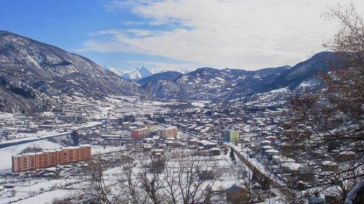

ზოგადი აღწერა

პირველ რიგში, ერთ-ერთი ყველაზე მწვავე პრობლემა ეკონომიკური მდგომარეობაა. ადგილობრივი ეკონომიკა ძირითადად აგრარულ სექტორზეა დამოკიდებული, რაც არ უზრუნველყოფს სტაბილურ შემოსავალს მთელი წლის განმავლობაში. სამუშაო ადგილების სიმცირე განსაკუთრებით აზარალებს ახალგაზრდებს, რის გამოც ისინი ტოვებენ ქალაქს და გადადიან დიდ ქალაქებში, როგორიცაა თბილისი, ან მიდიან საზღვარგარეთ. ეს პროცესი იწვევს დემოგრაფიულ პრობლემებს — მოსახლეობის დაბერებასა და შრომისუნარიანი ძალის შემცირებას. ინფრასტრუქტურული პრობლემებიც მნიშვნელოვან ბარიერს წარმოადგენს. მიუხედავად იმისა, რომ ბოლო წლებში გარკვეული გაუმჯობესებები განხორციელდა, კვლავ პრობლემურია გზების მდგომარეობა, განსაკუთრებით სოფლებთან დამაკავშირებელი გზები. ზამთრის პერიოდში გადაადგილება ხშირად რთულდება. ასევე, ინტერნეტის ხარისხი და საზოგადოებრივი ტრანსპორტი ჯერ კიდევ საჭიროებს განვითარებას, რაც აფერხებს როგორც ბიზნესს, ისე ტურიზმს. ტურიზმის პოტენციალი ამბროლაურში დიდია, მაგრამ სრულად ათვისებული არ არის. რეგიონს აქვს უნიკალური ბუნებრივი რესურსები — მთები, ტყეები, მდინარეები, ასევე კულტურული ღირსშესანიშნაობები და ღვინის ტრადიციები. თუმცა ტურისტული ინფრრასტრუქტურა — სასტუმროები, გიდების სერვისები, ორგანიზებული ტურები — ჯერ კიდევ განვითარების ეტაპზეა. შესაბამისად, ბევრი ვიზიტორი მხოლოდ მოკლე ვიზიტით შემოიფარგლება და რეგიონში ეკონომიკური სარგებელი სრულად არ გენერირდება. ამ პრობლემების გადასაჭრელად საჭიროა კომპლექსური მიდგომა. ერთ-ერთი მნიშვნელოვანი მიმართულებაა მცირე და საშუალო ბიზნესის მხარდაჭერა. სახელმწიფომ და კერძო სექტორმა უნდა შექმნან პროგრამები, რომლებიც ხელს შეუწყობს ადგილობრივი წარმოების განვითარებას — იქნება ეს ღვინო, სოფლის მეურნეობის პროდუქცია თუ ხელნაკეთი ნივთები. ფინანსური მხარდაჭერა, როგორიცაა გრანტები და დაბალპროცენტიანი სესხები, მნიშვნელოვნად გაზრდის ადგილობრივ ეკონომიკურ აქტივობას. ტურიზმის განვითარება ასევე კრიტიკულია. საჭიროა ინფრასტრუქტურის გაუმჯობესება — მეტი სასტუმროსა და საოჯახო ტიპის განთავსების ობიექტის შექმნა, ეკო-ტურებისა და ღვინის ტურების განვითარება, ლაშქრობების მარშრუტების მოწყობა. მნიშვნელოვანია ასევე რეგიონის პოპულარიზაცია საერთაშორისო დონეზე, რათა გაიზარდოს უცხოელი ტურისტების ნაკადი. ინფრასტრუქტურის გაუმჯობესება უნდა მოიცავდეს გზების რეაბილიტაციას, ინტერნეტის ხარისხის გაზრდას და საზოგადოებრივი ტრანსპორტის განვითარებას. ეს არა მხოლოდ ადგილობრივ მოსახლეობას გაუმარტივებს ცხოვრებას, არამედ ბიზნესისა და ტურიზმის განვითარებასაც შეუწყობს ხელს. განსაკუთრებული ყურადღება უნდა დაეთმოს განათლებასა და პროფესიულ გადამზადებას. ახალგაზრდებისთვის პროფესიული პროგრამების შეთავაზება — მაგალითად ტურიზმის, მომსახურების სფეროსა და აგრობიზნესის მიმართულებით — მათ მისცემს შესაძლებლობას, ადგილზე დასაქმდნენ და ნაკლებად იყვნენ დამოკიდებული მიგრაციაზე. დასასრულს, ამბროლაური არის ქალაქი, რომელსაც აქვს მნიშვნელოვანი ბუნებრივი, კულტურული და ეკონომიკური პოტენციალი. თუმცა ამ პოტენციალის სრულად რეალიზებისთვის აუცილებელია მიზანმიმართული პოლიტიკა, ინფრასტრუქტურის განვითარება და ადგილობრივი მოსახლეობის მხარდაჭერა. სწორი მიდგომების შემთხვევაში შესაძლებელია, რომ ამბროლაური გადაიქცეს არა მხოლოდ მშვიდ და ლამაზ რეგიონად, არამედ ეკონომიკურად აქტიურ და ტურისტულად მიმზიდველ ცენტრად საქართველოში.